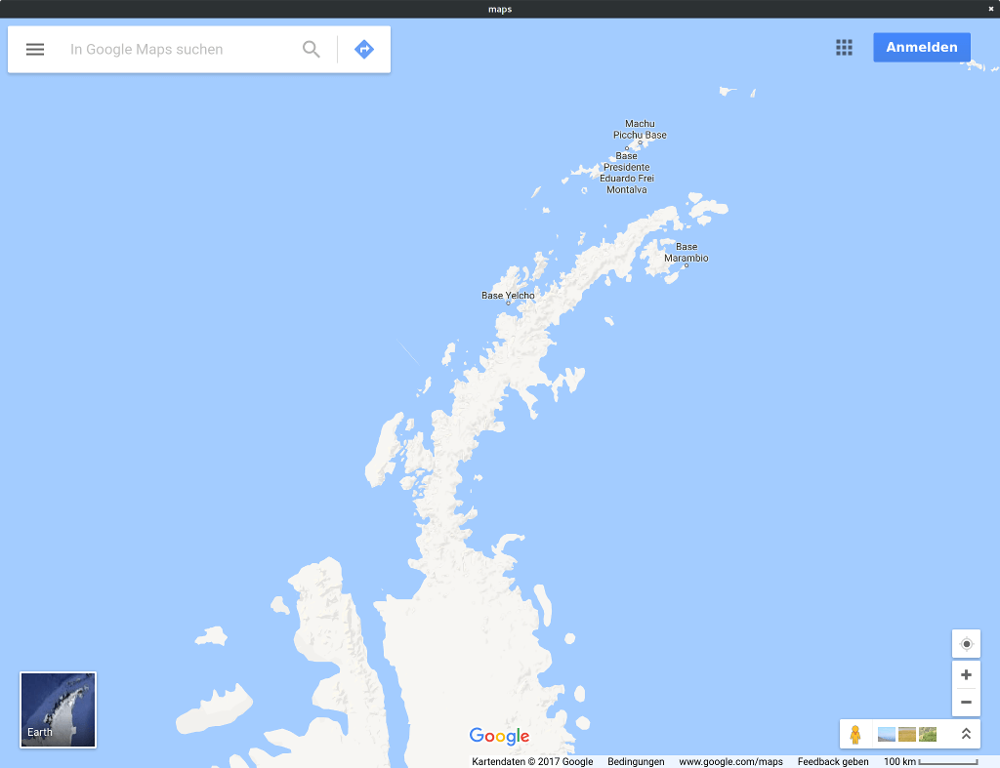

WebEngine Widgets Maps Example
Demonstrates how to handle geolocation requests.

Maps demonstrates how to handle geolocation requests originating from a QWebEnginePage.
The Geolocation API is a JavaScript API that web applications can use to determine the user's physical location to show on a map, for example. As Qt WebEngine relies on the Qt Positioning module to power this API, a viable location backend is needed for the target platform.
To avoid accidentally sending location information to third parties geolocation requests are denied by default. This example demonstrates the steps an application must take in order to start accepting these requests.
Note: On Windows 11, enable settings to grant the application access to Windows location services. In the Settings App under Privacy & Security > Location, enable Location services, Let apps access your location and Let desktop apps access your location.
Running the Example
To run the example from Qt Creator, open the Welcome mode and select the example from Examples. For more information, visit Building and Running an Example.
The Code
The example program consists of a single class, MainWindow, inheriting from QMainWindow:
#include <QMainWindow> #include <QWebEngineView> class MainWindow : public QMainWindow { Q_OBJECT public: explicit MainWindow(QWidget *parent = nullptr); private: QWebEngineView *m_view; };
In the constructor we first set up the QWebEngineView as the central widget:
MainWindow::MainWindow(QWidget *parent) : QMainWindow(parent) , m_view(new QWebEngineView(this)) { setCentralWidget(m_view);
We then proceed to connect a lambda function to the QWebEnginePage::featurePermissionRequested signal:
QWebEnginePage *page = m_view->page();
connect(page, &QWebEnginePage::featurePermissionRequested,
[this, page](const QUrl &securityOrigin, QWebEnginePage::Feature feature) {
This signal is emitted whenever a web page requests to make use of a certain feature or device, including not only location services but also audio capture devices or mouse locking, for example. In this example we only handle requests for location services:
if (feature != QWebEnginePage::Geolocation)
return;
Now comes the part where we actually ask the user for permission:
QMessageBox msgBox(this);
msgBox.setText(tr("%1 wants to know your location").arg(securityOrigin.host()));
msgBox.setInformativeText(tr("Do you want to send your current location to this website?"));
msgBox.setStandardButtons(QMessageBox::Yes | QMessageBox::No);
msgBox.setDefaultButton(QMessageBox::Yes);
if (msgBox.exec() == QMessageBox::Yes) {
page->setFeaturePermission(
securityOrigin, feature, QWebEnginePage::PermissionGrantedByUser);
} else {
page->setFeaturePermission(
securityOrigin, feature, QWebEnginePage::PermissionDeniedByUser);
}
});
Note that the question includes the host component of the web site's URI (securityOrigin) to inform the user as to exactly which web site will be receiving their location data.
We use the QWebEnginePage::setFeaturePermission method to communicate the user's answer back to the web page.
Finally we ask the QWebEnginePage to load the web page that might want to use location services:
page->load(QUrl(QStringLiteral("https://maps.google.com")));
}
See also Qt WebEngine HTML5 Geolocation.